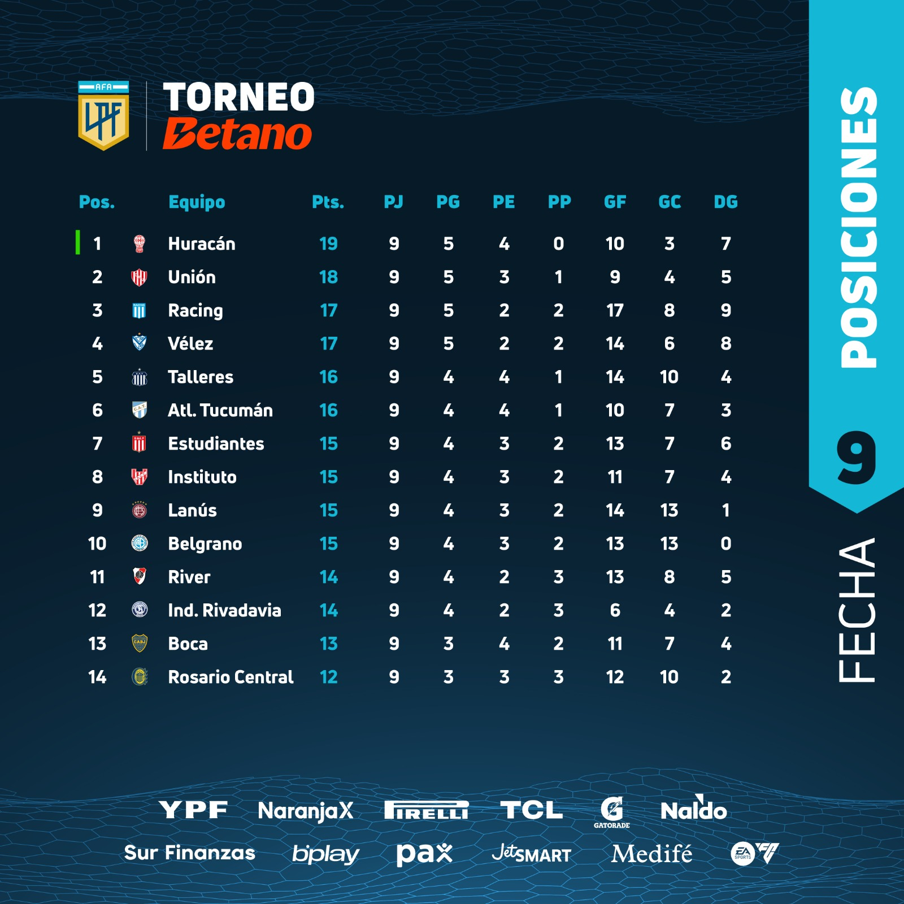
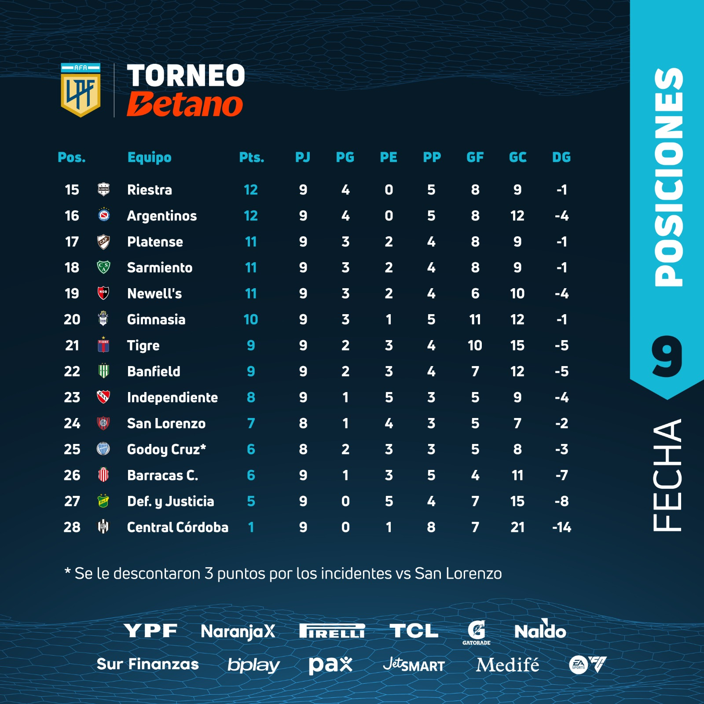

Tabla de Posiciones
 -El campeón clasifica a la Copa Libertadores.
-*Se le descontaron 3 puntos a Godoy Cruz por incidentes en Fecha 3
-El campeón clasifica a la Copa Libertadores.
-*Se le descontaron 3 puntos a Godoy Cruz por incidentes en Fecha 3
-Clasifican de forma directa a la Copa Libertadores: Campeón Copa de la Liga (Estudiantes) + Campeón Liga + Campeón Copa Argentina.
-Puestos de clasificación a Libertadores por Tabla Anual.
-Puestos de clasificación a Sudamericana por Tabla Anual.
-El último de la Tabla Anual desciende a la Primera Nacional. Si ya desciende por promedios, lo hace el siguiente equipo de la tabla.
-*Se le descontaron 3 puntos a Godoy Cruz por incidentes en Fecha 3
-El último en promedios desciende a la Primera Nacional. También desciende el último de la Tabla Anual.